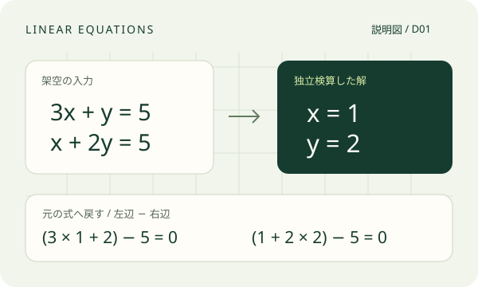

MATH × AI × ENGINEERING
問いとデータを、
条件のわかる
計算と判断へ。
数学知と実応用をつなぐ、
AI数理工学プラットフォーム。
式を解く。観測からモデルを作る。条件を変えて比べる。MathLangは、数学AIと条件を持つ計算をつなぎ、結果と根拠を読み直せる作業を育てています。
計算の読み方を見る開発中の紹介ページ · 状態更新 __UPDATED_AT__
「この答えは、元の式を満たす？」

答えに、元の問題と確かめ方を添える。
解だけでなく、条件と根拠まで。
問い → 確認 → 計算 → 判断THREE WAYS IN
基本数学から、工学の判断へ。
小さな式から始めて、データの読み方、観測とモデルの関係へ。
3つの問いで、MathLangが育てている作業を紹介します。
掲載図は新しく描いた説明図です。製品の実行UIや収録済み実演は、対応する一巡の検証後に差し替えます。
READ THE CALCULATION
元の式に戻す。
そこから読めることを考える。
架空の連立方程式を、独立に代入して確かめます。残差は「左辺 − 右辺」。この厳密な数の説明では、両方の残差とそのノルムは0です。
実際の数値計算では、小さい残差と真の解に近いことの保証を分けて読みます。条件や精度を含めて、何が確かめられたかを扱うのが次の問いです。
ここに示す値は説明用の独立検算で、MathLangの実行・保存結果やFloat64の実測値ではありません。
3x + y = 5
x + 2y = 5
- 1つ目の式
- 3 × 1 + 2 − 5 = 0
- 2つ目の式
- 1 + 2 × 2 − 5 = 0
- 残差のノルム
- √(0² + 0²) = 0
FROM QUESTION TO EVIDENCE
人とAIと数学が、役割を持つ。
本人の問いを整理し、条件を確認してから計算へ。
この流れを、各デモの入口と保存された根拠へつないでいます。
- 01本人
問いと生入力
知りたいことと、手元の式・表・観測を出す。
- 02AI
条件と方法を整理
数学知を参照し、不足している条件を確かめる。
- 03本人
前提を確認
データの意味、単位、範囲、採取条件を確認する。
- 04数理処理
宣言した計算
対象と方法を定め、結果と成立条件を読む。
- 05本人
判断と根拠を残す
元の条件と結果を結び、後から読み直す。
専用経路で確認した部分と、新しい一巡へ接続している部分があります。各紹介の現在の範囲を、下に分けて示します。
A RESEARCH PROJECT, IN VIEW
今あるものと、次に確かめること。
個人R&Dとして開発中です。数学API・専用操作・通常会話・本人の一巡を分けて確かめています。実装済みの表示は、記載した限定範囲に対応します。
状態・更新日：__UPDATED_AT__。資料照合日は保存された根拠を読んだ日です。受入は過去の固定版の範囲で、新しい製品実行や現source全体の再受入を表しません。
INPUTS & ORIGIN
小さな入力、確かめられる来歴。
公開素材は、新規の説明文・SVG・架空の生入力です。二群の8行CSVと、解析式から作った振動13点も用意しました。これらの新しい入力を製品で実行した結果は、初版に掲載していません。